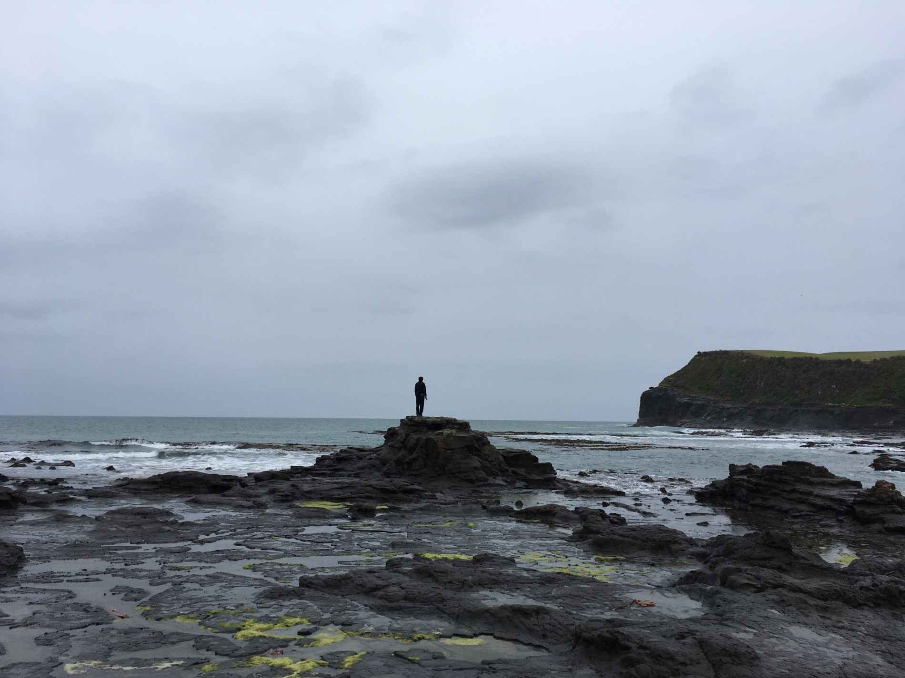
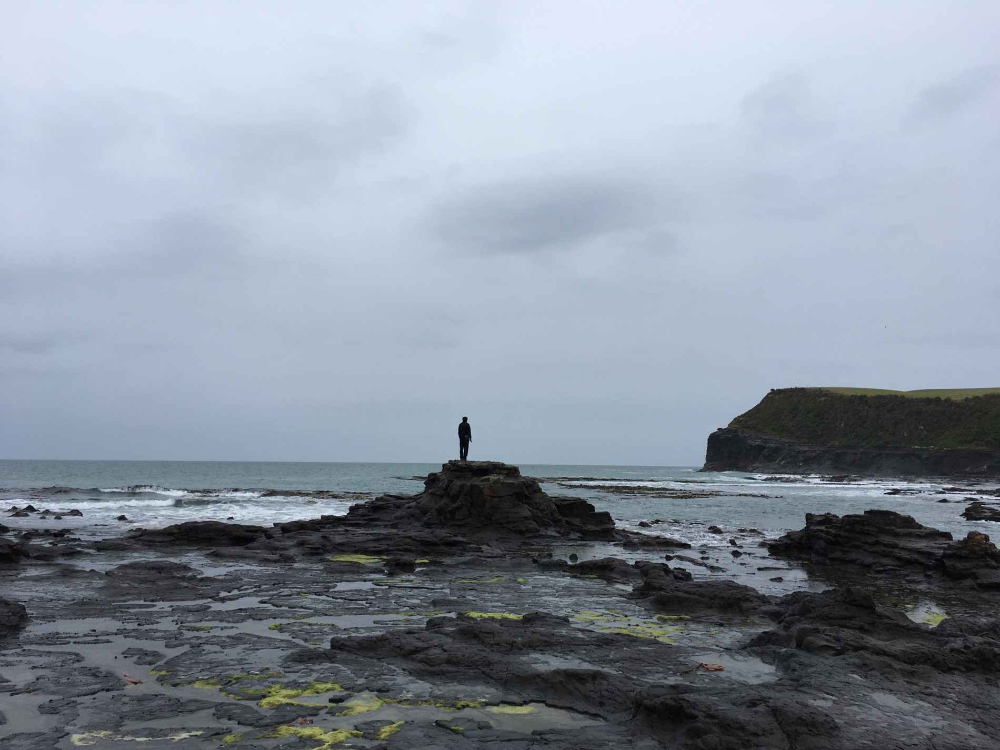
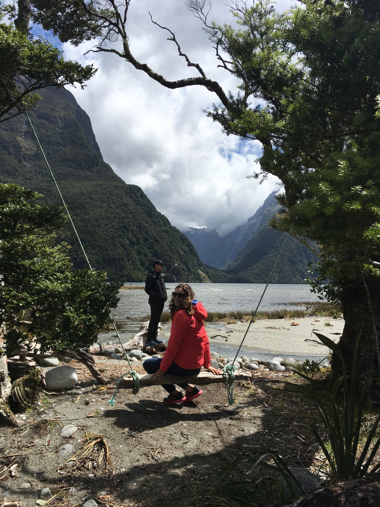
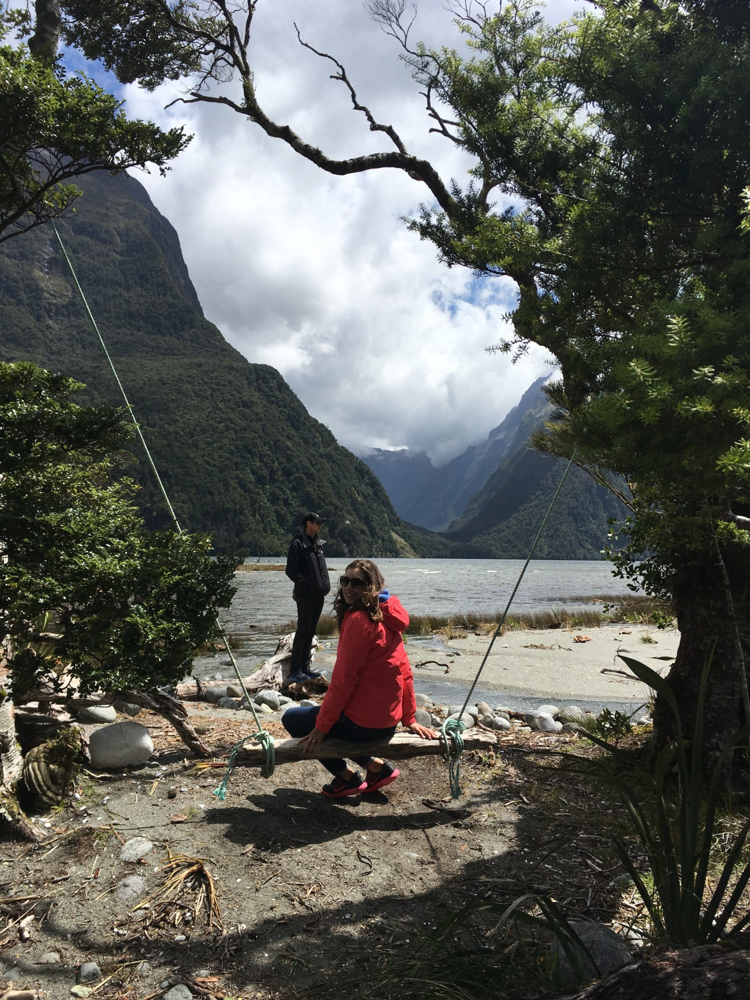

V neděli za námi dorazila Alice se Zdeňkem. Pomohli nám s pÅ™Ãpravou hromady bramboráků, které jsme dělali na rozlouÄenou pro naše spolumakáče z Kinlochu. Bramboráky měly takový úspěch, že nás chodili cizà lidé požádat, zda by taky mohli kousek ochutnat.
V pondělà jsme se se všemi rozlouÄili a vyrazili opět na cesty. Vyšlo nám nádherné poÄasà na náš dlouho plánovaný Routeburn great walk. Pro mě zatÃm stoprocentně nejnároÄnějÅ¡Ã výlet. Poslednà část cesty zpět byla nekoneÄná. Až zpátky u auta nám Marek řekl, že jsme ušli 27km. To, že nám to oznámil až na úplném konci bylo zcela záměrně, páč po této informaci mě zaÄaly bolet nohy ještě mnohem vÃc a on věděl, že kdyby mi to prozdradil dÅ™Ãve, byla vysoká pravděpodobnost toho, že by mÃsto svého batůžku nesl mě.
V uterý celý den pršelo, takže jsme museli pozměnit naše plány. Zůstali jsme v Te Anau, zašli si na kafe a odpoÄÃvali. Přece jen to byla po takovým výkonu potřeba.
PředevÄÃrem ráno jsme si skoÄili k Alici se Zdeňkem do kempu na snÃdani a sprchu. Naneštěstà jsme byli viděni, takže při odchodu z kempu byl Mara odchycen a naúčtovali nám 24 dolarů poplatek za použità jejich zázemÃ, a to i přesto, že jsme zarytě tvrdili, že jsme u nich byli jen na snÃdani 😀 holt nejsou blbà a urÄitě nejsme prvnÃ, kdo to na ně takhle zkoušel.
VÄera se nám poÄasà opět vylepšilo, tak jsme zamÃÅ™ili na Milford Sound udělat pár libových foteÄek zdejÅ¡Ãch pÅ™ÃrodnÃch krás. Opravdu bylo na co koukat. Nádherné fjordy, obřà vodopády a božská pÅ™Ãroda. Podle mě byl právem Milford Sound zvolen jako jedno z nejhezÄÃch mÃst planety. Zaplatili jsme si projÞku lodà a dvě hoÄky obdivovali vše okolo.
Dnes jsme se vydali na úplný jih jižnÃho ostrova. Měli jsme surfovat s delfÃnama, vidět lachtany a pozorovat tučňáky. Bohužel nám poÄasà nepřálo, takže tuleni ani delfÃni se neukázali. VeÄer jsme se po dvou hodinách stánà v děsti na pláži doÄkali. ZaÄali připlouvat tuÄnáci žlutoocÃ. Na světě jich zbývá už pouze 3 až 4 tisÃce a patřà mezi ohrožený druh. I přes tu zimu a déšť tato přehlÃdka roztomilosti stála za to. Jsou prostě božà ❤

 



 


{kind=link}
{kind=link}